ImpressCMS Install Guide
Welcome
This install document is a work in progress:
* If you see any errors or can improve upon it please do so.
* As always there is a live copy of these docs maintained on the ImpressCMS website.
* You can contribute to these documents at anytime to better clarify the information contained in them.
* Edit the live documentation online by following this link.
* As always there is a live copy of these docs maintained on the ImpressCMS website.
* You can contribute to these documents at anytime to better clarify the information contained in them.
* Edit the live documentation online by following this link.
If your new to ImpressCMS always download the most stable released version:
* The ImpressCMS packages are released for download in the .tar.gz and .zip compression formats.
* You may need to download a (compression utility / file manager) from the internet so you can open the packages.
* Free software suggestion, 7-Zip File Manager.
* Paid software suggestion, WinZip comes with a 30 Day free trial.
* Windows Xp and above comes preinstalled with a simple soultion for zipped files, but its not as powerful as the above software.
* If your personal computer runs any flavor of (nix) there are many utilities already installed to use on your system.
* (If online) Please take the time now to extract all files and folders from the ImpressCMS release you downloaded.
* You may need to download a (compression utility / file manager) from the internet so you can open the packages.
* Free software suggestion, 7-Zip File Manager.
* Paid software suggestion, WinZip comes with a 30 Day free trial.
* Windows Xp and above comes preinstalled with a simple soultion for zipped files, but its not as powerful as the above software.
* If your personal computer runs any flavor of (nix) there are many utilities already installed to use on your system.
* (If online) Please take the time now to extract all files and folders from the ImpressCMS release you downloaded.
Lets now take a look inside the ImpressCMS folder you just extracted. There are 4 different directories/folders:
1. "docs" - Contains this install.html document as well as the GNU license.txt, changelog.txt and language_changelog.txt
* All the files inside the docs folder can be very useful to members that wish to contribute to the project.
2. "extras" - Contains a login.php file that may be used to run ImpressCMS in ssl (Secure Sockets Layer).* This feature is mostly used in ecommerce for accepting credit cards on your website.
* You would need to purchase an SSL Certificate from a company like Verisign or Thawte for this feature to work.
* Please take a look at the readme.txt in "extras" folder.
3. "htdocs" - Contains all the fundamental files and folders of the ImpressCMS package.* You would need to purchase an SSL Certificate from a company like Verisign or Thawte for this feature to work.
* Please take a look at the readme.txt in "extras" folder.
* For a fresh install of ImpressCMS you must upload all files and folders "inside" of this "htdocs folder".
* They must be installed/uploaded into a working directory in your servers path. Example: www.yourdomian.com
4. "upgrade" - Contains all the files needed to upgrade your current install of XOOPS to the newer features of ImpressCMS.* They must be installed/uploaded into a working directory in your servers path. Example: www.yourdomian.com
* Upload this folder "only" if you intend to upgrade from an older version of "XOOPS or ImpressCMS".
The Basics
To install ImpressCMS for the first time, you'll need to have the minimum following server software pre-installed:
* HTTP Server (Apache, IIS, Roxen ect.)
* PHP 4.3.0 (5.1 or higher recommended)
* MySQL Database 3.23 (4.1 or higher recommended)
* PHP 4.3.0 (5.1 or higher recommended)
* MySQL Database 3.23 (4.1 or higher recommended)
Before starting the install, be sure to have:
* Created a database for your ImpressCMS installation
* The ability to set the following directories and files world writeable: cache/, templates_c/ and uploads/ and the file mainfile.php
* Turn cookie and JavaScript? support in your browser on.
(Have your hosting company create one if you can't. The install script does provide this capability with the proper privileges).
* A user account with the proper database permissions.* The ability to set the following directories and files world writeable: cache/, templates_c/ and uploads/ and the file mainfile.php
* Turn cookie and JavaScript? support in your browser on.
Installing locally
If your running a local environment for development or testing, make sure that you have the previous requirements met. Once this is done, copy the contents of the HTML directory (from the ImpressCMS distribution file or SVN) to the root document path of your web environment. Once the files are copied there, you can start the install by typing http://yoursite.com. This will start the install process.
Installing on a hosted platform
If your running in a hosted environment, unpack the ImpressCMS files locally or on the server if you have telnet or SSH access. Once you done this, make sure to move or copy all ImpressCMS files from the htdocs directory to your root web directory (your provider usually provides this location with directions). Once the files are copied there, you can start the install by typing http://yoursite.com. This will start the install process.
Show/Hide help
During the installer, you will be able to display useful help and information about the process, by clicking the button below.

Advanced users may not require this information, but we strongly recommend its usage for people new to ImpressCMS
The button reveals solutions for many problems you may otherwise have.
Installation
Once the files are copied there, you can start the install by typing http://yoursite.com. (http://localhost if you run it on local server). We are automatically redirected to installation script, which will begin the install process.
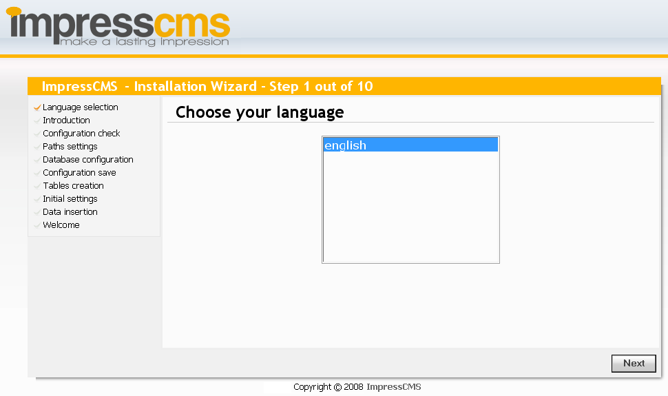
Step 1: Language
In the first step of this installation please choose your language. The default is English. Please Click Next.
***Notes*** If you do not see your own language please translate a lang file for this project.
Link to installer lang file information.
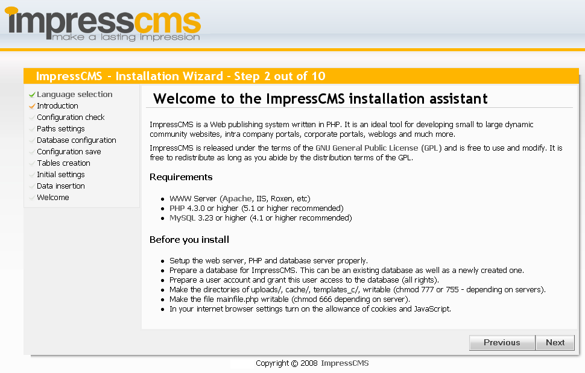
Step 2: Welcome Screen, Databases & Chmod/Writable
Welcome the ImpressCms installer. We need to make sure we have a few things setup before we proceed.
The best way to do this is by using your webhosting control panel. Example include Cpanel, Plesk & H-Sphere
Setting up a mysql database:
* Cpanel version which can be accessed thru www.yourdomain.com/cpanel
* Access Php admin thru your hosting control panel.
* Click on the database icon for mysql.
* You will be able to create a database with username and password.
* yourdatabase_yourdatabase.
* Access Php admin thru your hosting control panel.
* Click on the database icon for mysql.
* You will be able to create a database with username and password.
* yourdatabase_yourdatabase.
Cpanel user manuel.
Plesk user manuel
H-Sphere user manuel
Chmod/world writable:
*The ability to set the following directories/folders and files world writeable:
* cache/ templates_c/ & uploads/
* mainfile.php
* .
* cache/ templates_c/ & uploads/
* mainfile.php
* .
Cute FTP
WinSCP
WS_FTP
FTP Definitions

Step 3: Checking server configuration
In the third step the script will check the server configuration.
This will show the details of your server, and if they are suitable for your installation.
If the text is green, then everything is good.
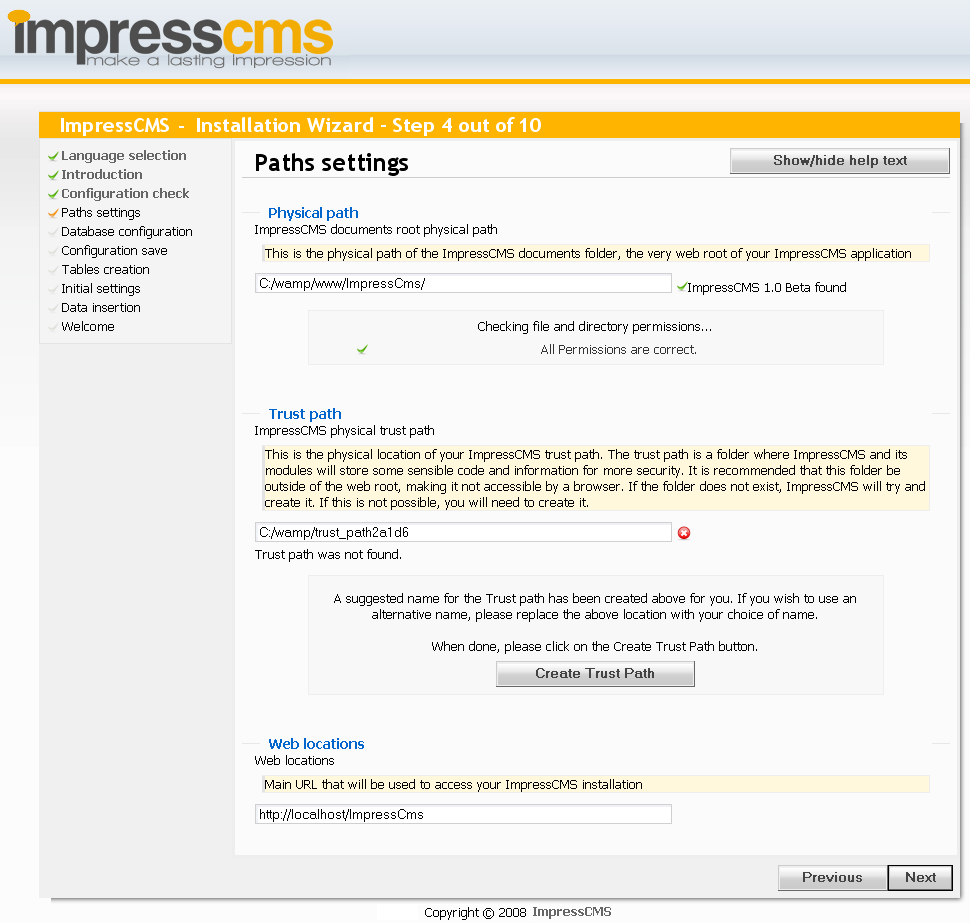
Step 4: Paths and permissions
The next part of the install Wizard is designed to check your file and directory permissions. If your running in a Windows environment, this should be a pretty painless step.
I use Linux here and as the above screenshot shows, there are problems with permissions. In order to meet required permission you have to change them as Wizard is telling you in a tip box.
Give CHMOD 777 to mainfile.php, /templates_c, /cache, /uploads And hit Refresh button.
Phisical path and Web locations address will be defined by script itself. If you want to learn a bit more about them, click Show/hide help button.
If you did last action properly, you should get a message like on the screen above. Now, the only thing you have to set up is Trust path. To get more info about this click the Show/hide help button.
Click help button for more informations This folder should be writable (CHMOD 777). After we set up the Trust path and script said "Trust path found", we can move forward to the next step.
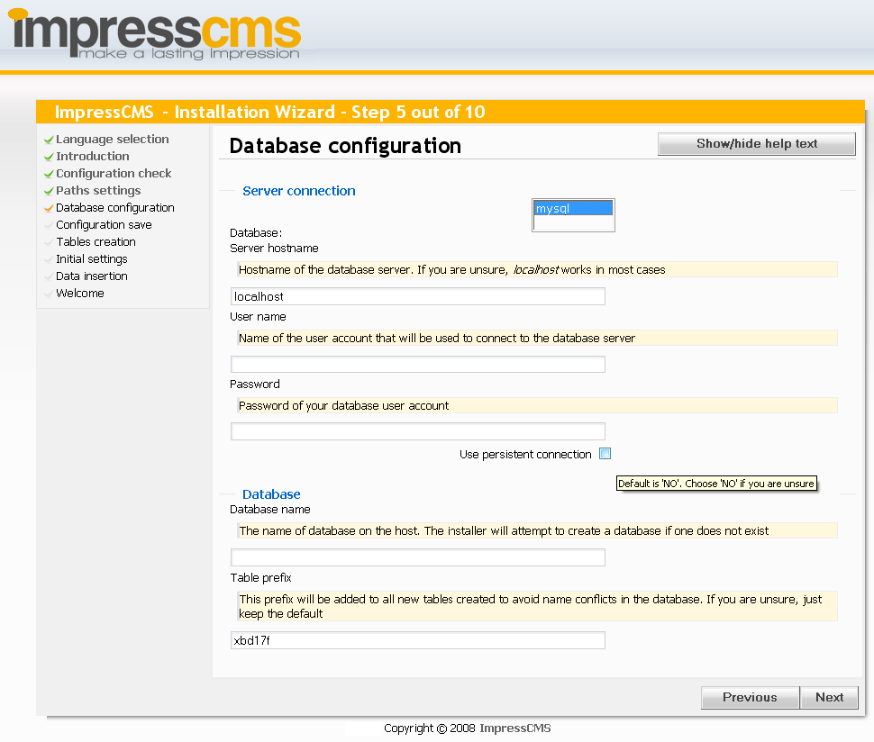
Step 5: Database configuration
Let's begin with a database. Server hostname - if your hosting provider hasn't told you different - is localhost. Simply type it there.
It is time to type the rest of info which I told you to prepare in the beginning. Table prefix is generated randomly to ensure good protection against hackers. After all we click Next.
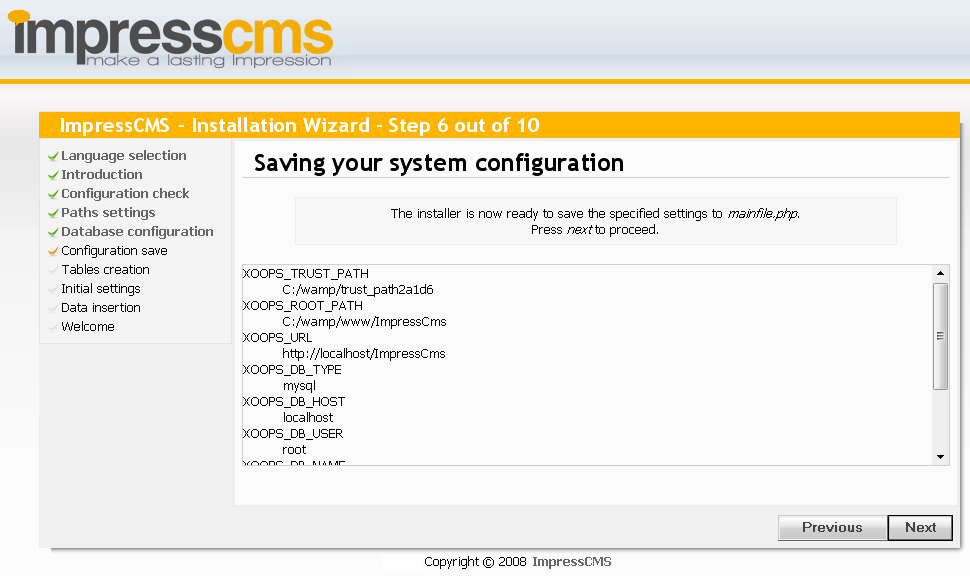
Step 6: Saving configuration
In this step thing which you have given before are saved into file. mainfle? secret file under trust path?
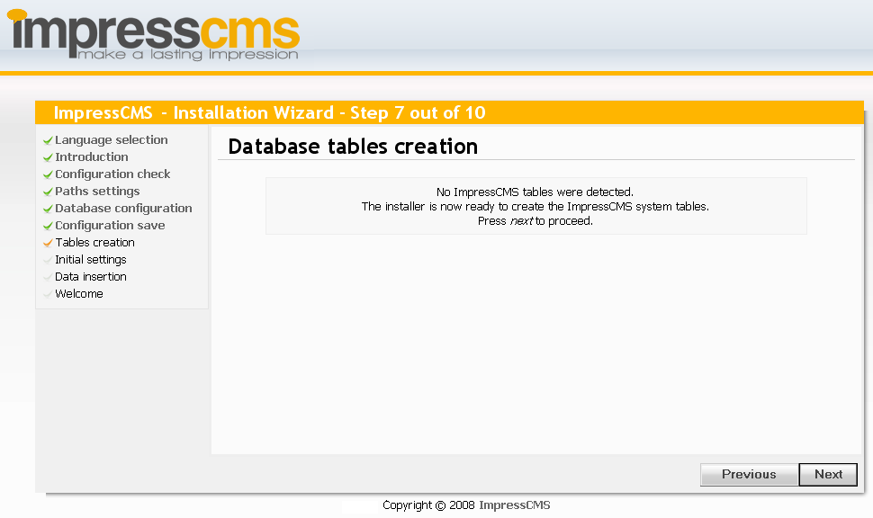
Step 7:Tables creation
First part of this step is telling us that it hasn't found any ImpressCMS tables and it is ready to create clean tables which will be structure for whole database
In the second part we can see which tables were created. These tables are empty now but we will fill them soon.
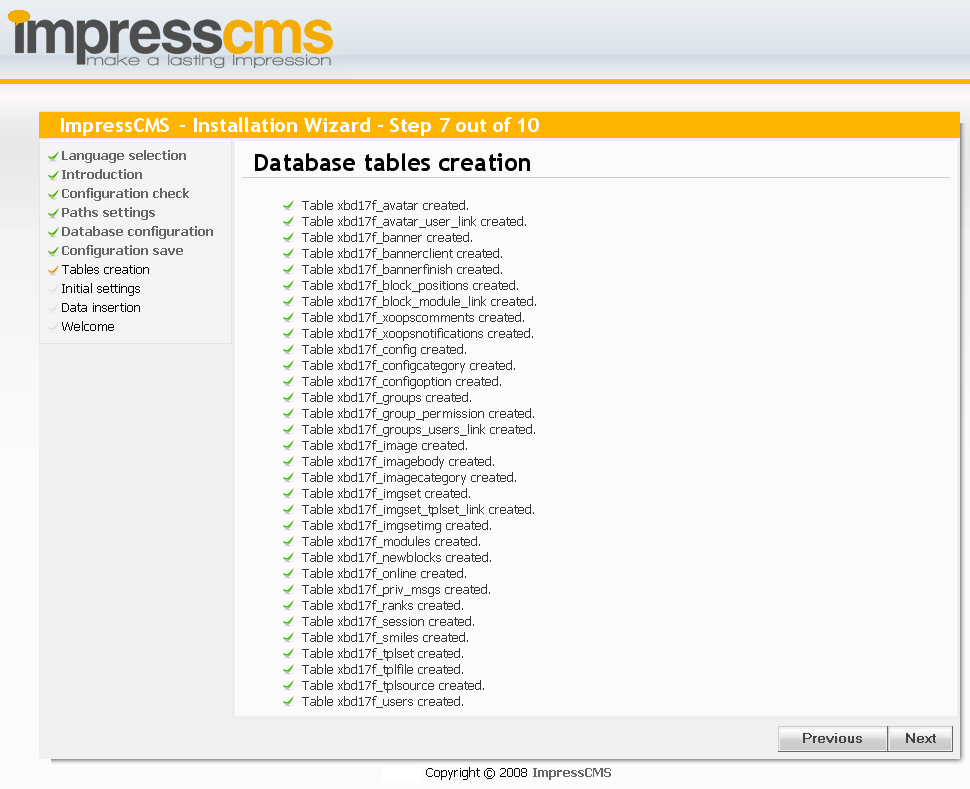
Step 7:Tables creation
First part of this step is telling us that it hasn't found any ImpressCMS tables and it is ready to create clean tables which will be structure for whole database
In the second part we can see which tables were created. These tables are empty now but we will fill them soon.
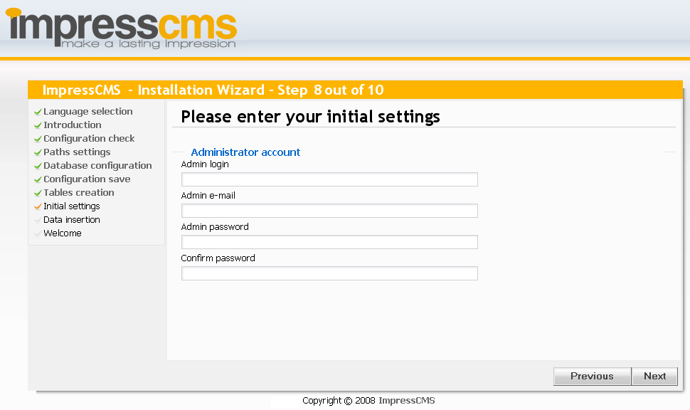
Step 8: Admin account
Please be careful here and write down or remember your administrative password. You will need this after the install to continue setting up your site.
Once you have completed inputting the correct information, click Next to continue.
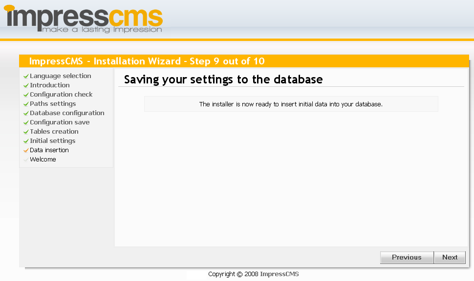
Step 9: Inserting initial data
As we can see script is ready to insert first data into our database. There is nothing to do here. Next.
In the second part of this step Wizard is inserting default ImpressCMS values in to previously created tables. These values let ImpressCMS the essential working.
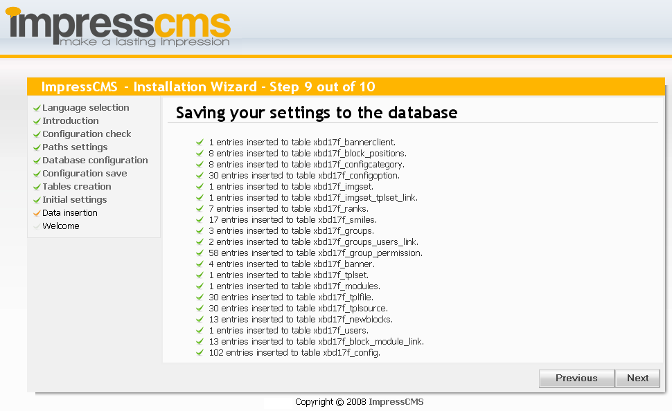
Step 9: Inserting initial data
As we can see script is ready to insert first data into our database. There is nothing to do here. Next.
In the second part of this step Wizard is inserting default ImpressCMS values in to previously created tables. These values let ImpressCMS the essential working.
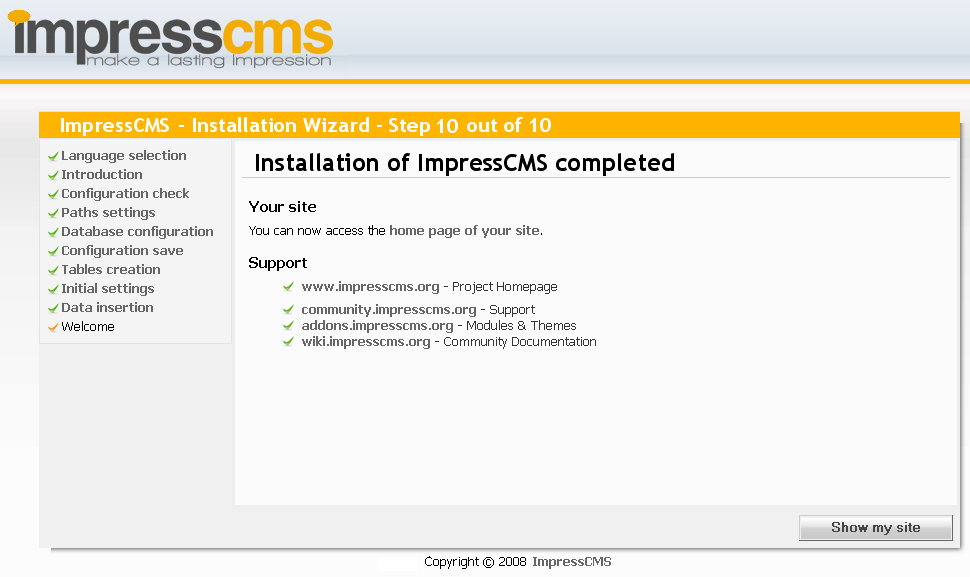
Step 10: Final
This is last step of installation. You can go directly to your brand new website by pressing Show my site button.
If all went well, then your new site should be up and running. If not, please visit community.impresscms.org for further assistance.
Anyway, I suggest you looking at links given. It is worth checking them every time you have any problem, need support, or want to help others. See you there :)